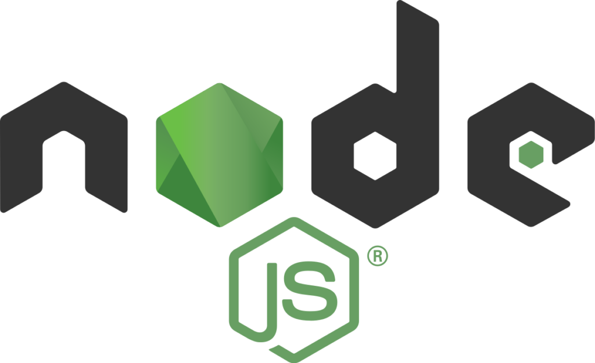
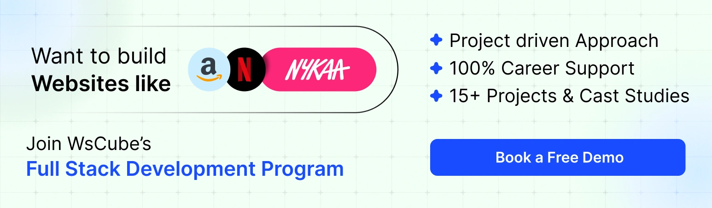

Node.js is a powerful and popular JavaScript runtime that has been gaining widespread adoption among developers and organizations alike. With its efficient, event-driven architecture, Node.js is an ideal platform for building scalable, high-performance web applications, as well as command-line tools, desktop applications, and even IoT devices.
Whether you're a fresher or an experienced developer, if you're looking to pursue a career in web development, it's crucial to have a solid understanding of Node.js and its ecosystem.
That's why in this blog post, we'll be covering some of the top NodeJS interview questions and answers in 2026 that you can expect during your next job interview, as well as tips on how to prepare and perform your best.
We'll cover topics such as creating web servers with Node.js, managing dependencies with npm, using Node.js frameworks like Express, handling asynchronous operations with callbacks, Promises, async/await, and much more.
Whether you're a beginner or an experienced developer, this post will provide valuable insights and help you boost your skills and confidence. It is because we have covered NodeJS interview questions for 5 years of experience, 3 years of experience, and 10 years of experience, as well as freshers.
If you're new to Node.js and want to get started with learning the basics, it is highly recommended to go for an online MERN stack course or web development course in India.
[ez-toc]NodeJS Interview Questions and Answers for Freshers
Let’s get started with the top NodeJS interview questions for freshers or beginners first:
1. What is NodeJS?
Node.js is an open-source, cross-platform, server-side JavaScript runtime environment that allows developers to build scalable and efficient network applications.
It was created by Ryan Dahl in 2009, and it uses the V8 JavaScript engine from Google Chrome to execute JavaScript code outside of a web browser.
Node.js has a non-blocking, event-driven I/O model, which makes it very fast and efficient, especially for handling large amounts of data or requests.

2. What are the features of NodeJS?
This is going to be the most asked Node.js interview questions for freshers. You must have a clear idea about the basics first.
Node.js has a variety of features that make it a popular choice for building network applications.
Here are some of its top features:
a) Asynchronous I/O
Since Nodejs has a non-blocking, event-driven I/O model, it makes it very fast and efficient for handling a large number of requests or data-intensive applications.
b) Cross-platform
It is a cross-platform runtime environment that can be used on various operating systems, such as Windows, Linux, and macOS.
c) Large and Active Community
Node.js has a large and active community that contributes to its ecosystem of modules and libraries, making it easy for developers to build complex applications quickly.
d) Scalability
Node.js is highly scalable and can handle a large number of concurrent connections with minimal overhead, which makes it a good fit for building real-time applications.
e) Speed
Because Node.js is built on top of the V8 JavaScript engine, it's very fast and efficient in executing JavaScript code.
f) Easy to Learn
Node.js is easy to learn and use, especially for developers with experience in JavaScript, making it a popular choice for building network applications. Students usually prefer to learn it with an online MERN Stack course in India.
g) Server-Side Rendering
Node.js can be used for server-side rendering of client-side applications, such as React or Angular applications, to improve performance and SEO (Search Engine Optimization).
3. What are some of the drawbacks of using NodeJS?
While Node.js offers several benefits, there are also some drawbacks to using it for building web applications.
Here are some of the potential drawbacks:
a) Single-Threaded Model
Node.js is a single-threaded runtime environment, which means that it can't utilize multiple cores on a machine. This can limit the performance of applications that require intensive processing or heavy computation.
b) Callback Hell
Node.js uses a callback-based approach to handle asynchronous operations, which can lead to complex and hard-to-read code in cases of deep callback nesting.
c) Immaturity of some libraries
Although the Node.js community is vast, some libraries or packages may still be immature or have limited support.
d) Scalability Challenges
While Node.js can handle a large number of concurrent requests, its single-threaded model can lead to performance issues when dealing with very high numbers of concurrent connections.
e) Security Risks
Since it is an open-source platform, there is a risk of vulnerabilities or security issues due to the use of third-party packages.
f) Debugging Challenges
Debugging Node.js applications can be challenging due to the event-driven, non-blocking I/O model.
g) Lack of Standards
Node.js lacks standardization, which can lead to confusion and inconsistency in the codebase, making it difficult for developers to work with Node.js code.
4. Why is Node.js single-threaded?
Node.js is single-threaded because it's built on top of the V8 JavaScript engine, which is single-threaded. The V8 engine was designed to execute JavaScript code within the browser, where the single-threaded nature is an advantage for security and stability.
When Node.js was developed, it was designed to take advantage of the same event-driven, non-blocking I/O model that was used in web browsers. This model allows Node.js to handle a large number of requests or data-intensive applications with minimal overhead.
By using a single-threaded model, Node.js can provide a more efficient and scalable solution for handling network applications than traditional multi-threaded approaches, which can be complex and inefficient.
This is one of the most common Node JS interview questions for freshers, as they should know the base of the technology they are using.
5. What is an event loop in Node.js?
An event loop is a core component of Node.js that allows it to handle asynchronous I/O operations in a non-blocking way. The event loop is responsible for handling and dispatching events, such as I/O operations, timers, and callbacks.
When Node.js receives an I/O request, it registers a callback with the operating system and continues to execute the remaining code. When the I/O operation is completed, the operating system notifies Node.js, and the event loop then retrieves the corresponding callback function from the callback queue and executes it.
Suggested Reading: Top 28 Java 8 Interview Questions and Answers for Experienced
6. What is the role of the event loop?
The event loop in Node.js has a loop cycle where it repeatedly performs four major tasks:
a) Process the event queue:
The event loop processes the events in the event queue, executing their corresponding callbacks.
b) Check for I/O events:
The event loop checks for I/O events that are ready to be processed and queues the corresponding callbacks.
c) Execute timers:
The event loop executes any timers that have expired, queuing their corresponding callbacks.
d) Check for pending operations:
The event loop checks for any pending operations that have not yet completed and queues their corresponding callbacks.
7. In Node.js, what are the advantages of using promises instead of callbacks?
Promises provide a more readable and maintainable way to handle asynchronous operations in Node.js compared to using callbacks. Furthermore, the promises make the code easier to debug, while offering better flow control and error handling.
8. What is NPM and what is it used for?
NPM (short for Node Package Manager) is a package manager for Node.js that allows you to easily install and manage packages, libraries, and modules that can be used in your Node.js projects.
NPM in NodeJS is a command-line tool that comes bundled with Node.js, and it provides a large registry of open-source packages that can be easily installed with a single command. The packages available on the NPM registry range from small utility functions to full-featured libraries and frameworks.
9. What are the features and benefits of Node Package Manager?
NPM has the following features and benefits that you must know if you are preparing for the NodeJS interview questions and answers:
a) Easy package installation:
NPM allows you to easily install packages by running a single command in your terminal.
NPM makes it easy to manage dependencies between packages, ensuring that your project always uses the correct version of each package.
b) Security:
NPM provides built-in security features, such as scanning packages for vulnerabilities and alerting you if a package has a known security issue.
c) Customizable scripts:
NPM allows you to define custom scripts in your package.json file, making it easy to automate common tasks, such as running tests, building your project, or deploying it to a server.
d) Collaboration:
NPM allows you to share your own packages on the registry, making it easy for other developers to use and contribute to your code.
10. What is the purpose of the module.Exports in NodeJS?
The module.exports is a special object that is used to define the public interface of a module. It is used to expose functions, objects, or values from a module that can be used by other parts of the application.
When a module is loaded with the required function in Node.js, the module.exports object is returned to the caller, providing access to the public interface of the module.
Example:
Here's an example of how module.exports can be used to define the public interface of a module:
// myModule.js
function myFunction() {
console.log('Hello, world!');
}
module.exports = {
myFunction: myFunction
};In this example, the myFunction function is defined as a private function within the myModule module. However, by assigning an object to module.exports, we can expose this function as a public method that can be used by other parts of the application.
11. What are the types of API functions in Node.js?
In Node.js, there are two main types of API functions: synchronous and asynchronous.
a) Synchronous API Functions:
Synchronous functions in Node.js are executed in a blocking manner, meaning that the program waits for the function to complete before moving on to the next line of code.
Synchronous functions can be useful for simple tasks that can be completed quickly, such as reading a file from disk or performing a simple calculation.
Example:
const fs = require('fs');
// Read file synchronously
const data = fs.readFileSync('example.txt');
console.log(data.toString());In this example, the readFileSync function is used to read the contents of a file from disk, and the program waits for this function to complete before moving on to the console.log statement.
b) Asynchronous API Functions:
Asynchronous functions in Node.js are executed in a non-blocking manner, meaning that the program does not wait for the function to complete before moving on to the next line of code.
Instead, asynchronous functions use callbacks or Promises to signal when they have completed their task.
Example:
const fs = require('fs');
// Read file asynchronously
fs.readFile('example.txt', (err, data) => {
if (err) throw err;
console.log(data.toString());
});In this example, the readFile function is used to read the contents of a file from disk, and a callback function is provided to handle the result. The program continues to execute while the readFile function is running, and the callback function is called when the file has been read.
Suggested Reading: Top 50+ PHP Interview Questions and Answers
12. How does Node.js handle asynchronous code execution?
If you have been using NodeJS for a while, then you must know the process because it is also one of the most frequently asked and top NodeJS interview questions.
When an asynchronous operation is initiated in NodeJS, such as reading a file from disk or making a network request, it will not wait for that operation to complete before moving on to the next line of code. Instead, it registers a callback function to be called once the operation completes.
This means that other code can continue to execute while the asynchronous operation is in progress, making Node.js well-suited for handling a large number of concurrent connections or I/O-intensive tasks.
When the asynchronous operation completes, Node.js will push the callback function to the event loop, which is responsible for managing all the registered callbacks. The event loop will execute each callback in turn, allowing the program to respond to events and process I/O in a timely manner.
13. What is Express.js?
Express.js is a popular, open-source web framework for Node.js that simplifies the process of building web applications and APIs. It provides a set of robust features and tools for developing server-side applications with Node.js, such as routing, middleware, and templates.
It is designed to be flexible and unopinionated, allowing developers to build applications according to their own preferences and needs.
It follows the minimalist approach to development, which means that it provides a set of core features but allows developers to add additional functionality through third-party middleware.
14. What is the package.json file in NodeJS?
The package.json file is a metadata file that is used in Node.js projects to define the dependencies, scripts, and other important information about the project.
This file is typically located in the root directory of the project and is used by the npm package manager to manage the project's dependencies and provide other useful features.
The package.json file is a JSON object that contains a number of key-value pairs that define various aspects of the project, including:
- name: The name of the project.
- version: The version of the project.
- description: A brief description of the project.
- main: The entry point of the project.
- dependencies: A list of the project's runtime dependencies.
- devDependencies: A list of the project's development dependencies.
- scripts: A list of scripts that can be run using the npm run command.
- author: The author of the project.
- license: The license under which the project is released.
Example
Here is an example of a package.json file:
{
"name": "my-project",
"version": "1.0.0",
"description": "My awesome project",
"main": "index.js",
"dependencies": {
"express": "^4.17.1",
"body-parser": "^1.19.0"
},
"devDependencies": {
"nodemon": "^2.0.7"
},
"scripts": {
"start": "node index.js",
"dev": "nodemon index.js"
},
"author": "John Doe",
"license": "MIT"
}In this example, the name and description fields provide some basic information about the project, the dependencies field lists the project's runtime dependencies, and the devDependencies field lists the project's development dependencies.
The scripts field defines some useful scripts that can be run using the npm run command, such as start and dev. The author and license fields provide information about the author and license of the project.
15. What is a callback function in Node.js?
The callback function in Nodejs is a function that is passed as an argument to another function and is executed when that function has completed its task. Callback functions are commonly used in Node.js to handle asynchronous operations, such as file I/O or network requests.
Example
Here is an example of a callback function in Node.js:
function readFile(path, callback) {
// Perform file I/O
// ...
// Call the callback function with the result
callback(result);
}
// Call the readFile function with a callback function
readFile('example.txt', function(result) {
console.log(result);
});In this example, the readFile function performs file I/O and then calls the callback function with the result. The callback function is defined inline as an anonymous function and is passed as the second argument to the readFile function.
When the file I/O is complete, the callback function is called with the result, and the result is printed to the console.
NodeJS Interview Questions and Answers for 3-5 Years Experience
Here are the top NodeJS interview questions and answers for experienced developers:
1. Explain asynchronous APIs in Node.js.
- Asynchronous API
An asynchronous operation is one that doesn't block the execution of the code. In other words, when a function is invoked, it doesn't wait for the operation to finish before continuing to the next line of code. Instead, it registers a callback function that will be called when the operation completes.
- Non-blocking API
Non-blocking I/O is a programming paradigm in which an application doesn't block when waiting for I/O operations to complete.
This is achieved by using asynchronous I/O operations, where the application initiates an I/O operation and then continues executing other tasks. The result of the I/O operation is delivered to the application through a callback function.
Node.js provides asynchronous and non-blocking APIs for I/O operations, which means that I/O operations can be performed without blocking the event loop. When an I/O operation is initiated, the event loop continues processing other tasks, and when the I/O operation completes, a callback function is executed.
2. How does Node.js work?
When a client sends a request to a Node.js server, the server responds by creating an event and adding it to an event loop. The event loop continuously checks for new events, and when one is detected, it dispatches the associated callback function to handle the event.
In addition to the core functionality provided by Node.js, there are many third-party modules and libraries available on npm that can be easily integrated into Node.js applications. These modules provide additional functionality such as database connectivity, authentication, and real-time communication.
3. Which database is more popularly used with Node.js?
Node.js is a very versatile platform that can be used with many different types of databases. However, the most popular database used with Node.js is MongoDB.
MongoDB is a NoSQL document-oriented database that is designed to store and manage large volumes of unstructured data. It is a popular choice for Node.js applications because it uses JSON-like documents to store data, which makes it easy to work with in JavaScript.
4. What are some of the most commonly used libraries in Node.js?
This is yet another important thing that you must know and have in your list of NodejS interview questions for 3 years experience.
Some of the most commonly used libraries in Node.js are:
a) Express:
A web application framework that provides a simple and flexible way to create web applications and APIs.
b) Socket.io:
A library for real-time, bidirectional communication between clients and servers over websockets.
c) Async:
A utility library that provides functions for working with asynchronous JavaScript, such as handling callbacks, promises, and control flow.
d) Lodash:
A utility library that provides a collection of functions for working with arrays, objects, and strings.
e) Request:
A library for making HTTP requests, which provides a simple and flexible way to make HTTP requests and handle responses.
f) Mongoose:
A MongoDB object modeling library for Node.js, which provides a simple and flexible way to work with MongoDB databases.
g) Winston:
A logging library that provides a flexible and extensible way to log messages in Node.js applications.
h) Bluebird:
A promise library that provides a fast and feature-rich implementation of promises in JavaScript.
i) Cheerio:
A jQuery-like library for working with HTML and XML documents in Node.js.
j) Moment.js:
A library for working with dates and times in JavaScript, which provides a simple and flexible way to parse, manipulate, and format dates and times.
Recommended Professional Certificates
Full Stack Development Course with AI Engineering
WordPress Bootcamp
5. What is an event loop in Node.js?
The event loop is a core concept in Node.js that enables it to handle many concurrent connections with low overhead. It is a loop that continuously checks for new events and executes the associated callbacks when events are detected.
In Node.js, when a client sends a request to a server, the server creates an event associated with that request and adds it to the event loop. The event loop continuously checks for new events, and when an event is detected, it dispatches the associated callback function to handle the event.
6. What is the difference between process.nextTick() and setImmediate() in Node.js?
Both process.nextTick() and setImmediate() are functions in Node.js that allow developers to schedule a function to be executed in the event loop.
However, there are some key differences between these two functions:
a) Timing:
process.nextTick() is executed immediately after the current operation completes and before the event loop continues.
setImmediate() is executed at the beginning of the next event loop iteration.
b) Priority:
The callbacks passed to process.nextTick() have a higher priority than those passed to setImmediate(). This means that if both functions are called within the same iteration of the event loop, the callbacks passed to process.nextTick() will be executed before those passed to setImmediate().
c) Recursion:
If a function is scheduled with process.nextTick() within a callback function that was also scheduled with process.nextTick(), the new function will be executed before the original function completes.
This can lead to infinite recursion and stack overflow errors. In contrast, setImmediate() uses a queue to store callbacks and is not susceptible to this kind of recursion.
d) Performance:
setImmediate() is generally more performant than process.nextTick(), especially when dealing with large or recursive operations, as it allows the event loop to continue and prevents it from being blocked by long-running or recursive tasks.
You must be prepared for this type of NodeJS interview questions for 5 years experience or below.
7. What is an EventEmitter in Node.js?
An EventEmitter is a built-in module in Node.js that allows developers to create and handle custom events in their applications. It is a class that provides methods for registering and emitting events, and it is based on the Observer design pattern.
Many built-in modules use the EventEmitter class, such as the HTTP, Net, and File System modules. Developers can also create their own custom EventEmitter objects to handle events in their applications.
Example:
Here's an example of how to use the EventEmitter module to create and handle custom events:
const EventEmitter = require('events');
const myEmitter = new EventEmitter();
// Register a listener for the 'myEvent' event
myEmitter.on('myEvent', (data) => {
console.log('myEvent was triggered with data:', data);
});
// Emit the 'myEvent' event with some data
myEmitter.emit('myEvent', {message: 'Hello World!'});In the example above, we create a new EventEmitter object called myEmitter. We then register a listener for the myEvent event using the on() method, which takes the event name and a callback function as arguments. The callback function is executed when the myEvent event is emitted.
We then emit the myEvent event with some data using the emit() method. This triggers the callback function registered earlier, which logs a message to the console.
Interview Questions for You to Prepare for Jobs
8. What is the difference between NodeJS and JavaScript?
Node.js and JavaScript are two different things, but they are often used together to create web applications.
JavaScript is a programming language that is used to create interactive web pages and web applications. It is a client-side language, which means that it is executed on the user's computer or device, typically within a web browser.
Node.js, on the other hand, is a runtime environment that allows developers to run JavaScript code on the server side.
While both Node.js and JavaScript use the same syntax and share many of the same language features, there are some key differences between the two:
a) Execution environment
JavaScript is typically executed within a web browser, while Node.js is executed on the server side.
b) Built-in modules:
Node.js provides a set of built-in modules that are not available in client-side JavaScript, such as the fs module for interacting with the file system and the http module for handling HTTP requests and responses.
c). Performance:
Node.js is often faster and more efficient than client-side JavaScript, especially for server-side tasks that require I/O operations, such as reading and writing files or handling database queries.
d) Use cases:
JavaScript is primarily used for creating interactive web pages and web applications, while Node.js is often used for creating server-side applications, APIs, and web services.
Suggested Reading: Top 55 JavaScript Interview Questions and Answers for Freshers & Experienced
9. How can we use callbacks in NodeJS?
A callback is a function that is passed as an argument to another function, and it is executed once the operation is complete or an error has occurred.
Here's an example of how to use a callback function to read a file in Node.js:
const fs = require('fs');
fs.readFile('example.txt', (err, data) => {
if (err) {
console.error(err);
} else {
console.log(data.toString());
}
});In this example, we use the built-in fs module in Node.js to read the contents of a file called example.txt. We pass a callback function as the second argument to the readFile() method, which is executed once the file is read.
If an error occurs during the read operation, the err argument of the callback function will be set to an error object. If the operation is successful, the data argument of the callback function will contain the contents of the file.
10. What is REPL in Node.js?
REPL stands for "Read-Eval-Print Loop" and it is a built-in feature of Node.js that allows developers to quickly and interactively test and experiment with JavaScript code. It provides a command-line interface where you can type in JavaScript commands, which are immediately evaluated and the result is printed to the console.
To start the Node.js REPL, simply open a terminal or command prompt and type node followed by the enter key. This will launch the Node.js command prompt, where you can enter JavaScript commands and see the results:
$ node
> 2 + 2
4
> console.log("Hello, world!")
Hello, world!
undefined
>In this example, we first enter the command 2 + 2, which evaluates to 4 and is printed to the console. Then we enter the command console.log("Hello, world!"), which prints the message "Hello, world!" to the console and returns undefined.
11. What is the buffer class in Node.js?
The Buffer class is a built-in class in Node.js that allows developers to work with binary data, such as images, audio, and video, as well as other types of data that cannot be represented as text.
The Buffer class in NodeJS provides a way to store and manipulate binary data in memory, using an array of integers ranging from 0 to 255, also known as octets.
Buffers are commonly used for a variety of tasks, such as reading and writing files, working with network protocols, and encoding and decoding data for transmission over the internet.
12. What is piping in Node.js?
Piping is a technique for streaming data between two or more streams, such as reading from a file and writing to a network socket, or reading from one network connection and writing to another.
This technique allows you to easily connect streams together and transfer data efficiently, without having to manually manage the data transfer or buffer the data in memory.
The pipe() method takes a destination stream as its argument and returns the destination stream, allowing you to chain multiple pipe() calls together:
const fs = require('fs');
const http = require('http');
const server = http.createServer((req, res) => {
const fileStream = fs.createReadStream('largefile.txt');
fileStream.pipe(res);
});
server.listen(3000);In this example, we create an HTTP server that listens on port 3000. When a client makes a request to the server, we create a new readable stream from a file called largefile.txt, and pipe the data to the response stream using the pipe() method.
This allows us to efficiently serve large files over the network, without having to buffer the entire file in memory. This is going to be one of the top NodeJS interview questions and answers for experienced professionals.
13. What is a first class function in Javascript?
In JavaScript, a first-class function is a function that is treated as a value, just like any other value such as a string, number, or object.
This means that a first-class function can be:
- Stored in a variable or data structure
- Passed as an argument to a function
- Returned as a value from a function
In other words, functions in JavaScript are just like any other data type, and they can be manipulated and used in the same way as any other value. This makes functions extremely powerful and flexible in JavaScript, and allows for a wide range of programming techniques and paradigms, such as functional programming and event-driven programming.
Here's an example of a first-class function in JavaScript:
function add(a, b) {
return a + b;
}
const addFunction = add; // Store the function in a variable
const result = addFunction(2, 3); // Call the function using the variable
console.log(result); // OutputIn this example, we define a simple function add() that takes two arguments and returns their sum. We then store the function in a variable called addFunction, and use the variable to call the function with the arguments (2, 3). The result of the function is then stored in a variable called result, which is printed to the console.
14. How to handle errors in Node.js?
It is among the most important NodeJS interview questions for 5 year experience.
In Node.js, errors can be handled using several techniques, depending on the type of error and the context in which it occurs.
Here are a few common techniques for handling errors in Node.js:
a) Callbacks:
When using Node.js callbacks, the convention is to pass an error object as the first argument to the callback function, and the result (if any) as the second argument. The error object should be checked for truthiness, and appropriate action should be taken based on the error.
For example:
fs.readFile('file.txt', (err, data) => {
if (err) {
console.error('Error:', err);
} else {
console.log('File contents:', data);
}
});In this example, we use the fs module to read a file, and pass a callback function that takes an error object and the file data as arguments. If an error occurs, we log the error to the console. Otherwise, we log the file contents.
b) Promises:
When using Promises in Node.js, you can handle errors using the catch() method, which is called when an error occurs in the Promise chain:
const readFilePromise = util.promisify(fs.readFile);
readFilePromise('file.txt')
.then((data) => {
console.log('File contents:', data);
})
.catch((err) => {
console.error('Error:', err);
});In this example, we use the util.promisify() method to convert the fs.readFile() function to a Promise-based function, and then use Promises to handle the result. If an error occurs, the catch() method is called with the error object.
c) Try-catch blocks:
In some cases, you may want to use a try-catch block to handle errors synchronously. This is useful when you need to handle errors immediately, or when using third-party libraries that throw errors synchronously:
try {
const result = someSyncFunction();
console.log('Result:', result);
} catch (err) {
console.error('Error:', err);
}In this example, we use a try-catch block to handle errors thrown by the someSyncFunction() function. If an error occurs, the catch block is called with the error object.
15. What are streams in Node.js and how are they useful?
Streams in Node.js are a way of handling data in a continuous and efficient manner. Streams allow you to read or write data piece by piece, rather than all at once, which can be useful for handling large files or data sets.
Streams also allow you to process data in real-time, as it becomes available, which can be useful for network programming, data processing, and other applications.
Types of Streams in Nodejs
There are four types of streams in Node.js:
- Readable streams: allow you to read data, piece by piece.
- Writable streams: allow you to write data, piece by piece.
- Duplex streams: can be both readable and writable.
- Transform streams: can transform data as it passes through.
Example
Here's an example of how you can use streams to read a large file in Node.js:
const fs = require('fs');
const readStream = fs.createReadStream('largefile.txt');
readStream.on('data', (chunk) => {
console.log(`Received ${chunk.length} bytes of data`);
});
readStream.on('end', () => {
console.log('Finished reading file');
});
readStream.on('error', (err) => {
console.error('Error:', err);
});In this example, we use the fs.createReadStream() method to create a readable stream for a large file, and listen for the data, end, and error events.
The data event is emitted each time a chunk of data is read from the file, and the end event is emitted when the entire file has been read. The error event is emitted if an error occurs during the read operation.
Suggested Reading: Top 65 Django Interview Questions and Answers
16. How do you debug a Node.js application?
Debugging is an important part of developing Node.js applications.
Here are some techniques for debugging Node.js applications:
a) Logging:
One of the simplest ways to debug a Node.js application is by adding log statements to your code. You can use the console.log() method to print out values or messages to the console. This can be a very effective way to trace the execution path of your application.
b) Node.js Debugger:
Node.js has a built-in debugger that you can use to debug your application. You can start your application with the --inspect flag, which opens a debugging session on a given port.
You can then connect to the debugging session using a browser or an IDE like Visual Studio Code. Once you are connected, you can set breakpoints, step through code, and inspect variables.
c) Node.js Inspector:
Node.js also has a web-based inspector that you can use to debug your application. You can start your application with the --inspect-brk flag, which pauses your application at the beginning of the script.
You can then open the inspector in your browser and connect to the debugging session. Once you are connected, you can use the inspector to set breakpoints, step through code, and inspect variables.
d) Stack Traces:
When an error occurs in your Node.js application, a stack trace is generated. The stack trace shows the sequence of function calls that led up to the error. By examining the stack trace, you can often identify the source of the error.
e) Profiling:
Node.js has a built-in profiler that you can use to analyze the performance of your application. You can start your application with the --prof flag, which generates a profiling report. You can then use the node --prof-process command to analyze the report and identify performance bottlenecks.
17. What is clustering in Node.js and how does it work?
Clustering is a technique in Node.js that allows you to create a cluster of worker processes that can share a single port and handle incoming requests in parallel. This can help improve the performance and scalability of your Node.js applications.
In a typical Node.js application, there is a single process that handles all incoming requests. This process runs on a single CPU core and can become a bottleneck as the number of requests increases. With clustering, you can create multiple worker processes that can handle requests in parallel, spreading the load across multiple CPU cores.
Clustering works by using the built-in cluster module in Node.js. This module allows you to create a master process that manages a cluster of worker processes.
The master process listens for incoming requests and distributes them to the worker processes in a round-robin fashion. Each worker process runs a copy of your application code and handles incoming requests independently.
Example:
Here's an example of how you can use clustering in Node.js:
const cluster = require('cluster');
const http = require('http');
const numCPUs = require('os').cpus().length;
if (cluster.isMaster) {
console.log(`Master ${process.pid} is running`);
// Fork worker processes
for (let i = 0; i < numCPUs; i++) {
cluster.fork();
}
cluster.on('exit', (worker, code, signal) => {
console.log(`Worker ${worker.process.pid} died`);
// Replace the dead worker
cluster.fork();
});
} else {
// Worker process runs the server
http.createServer((req, res) => {
res.writeHead(200);
res.end('Hello, world!');
}).listen(8000);
console.log(`Worker ${process.pid} started`);
}In this example, we create a master process that forks multiple worker processes. Each worker process runs a copy of the HTTP server, which listens for incoming requests and responds with a "Hello, world!" message. The master process manages the worker processes and replaces any that die unexpectedly.
18. What is the role of package-lock.json in a Node.js project?
The package-lock.json file is used by Node.js to lock the versions of the dependencies installed in a project. It is created automatically when you run the npm install command to install a package, and it specifies the exact version of each package and its dependencies that were installed.
The purpose of the package-lock.json file is to ensure that your application dependencies are consistent across different environments and installations. It prevents issues where different versions of a package may be installed in different environments, which can cause compatibility and stability problems.
19. What is the role of the process object in Node.js?
The process object in Node.js is a global object that provides information about the current Node.js process, as well as methods and events for interacting with the process and its environment.
Here are some of the common use cases of the process object in Node.js:
a) Accessing command line arguments:
The process.argv property provides an array of command line arguments passed to the Node.js process.
The first element of the array is the path to the Node.js executable, and the second element is the path to the JavaScript file being executed. Any additional arguments are included in subsequent elements.
b) Managing environment variables:
The process.env property provides an object containing the values of environment variables. You can read or modify these variables as needed in your Node.js application.
c) Controlling the Node.js process:
The process.exit() method can be used to exit the Node.js process with a specified exit code. The process.kill() method can be used to send a signal to the Node.js process, which can be used to terminate the process or perform other actions.
d) Listening for signals:
The process object emits events when certain signals are received, such as the SIGINT signal sent when the user presses Ctrl-C in the terminal. You can use the process.on() method to listen for these events and perform actions as needed.
e) Managing child processes:
The process object includes methods for spawning child processes and communicating with them using pipes and streams.
Suggested Reading: Top 65 Java Interview Questions and Answers for Freshers & Experienced
20. What is the purpose of the cluster module in Node.js?
The cluster module in Node.js is a built-in module that allows you to take advantage of multi-core systems by creating child processes to handle incoming requests. This allows you to scale your Node.js application across multiple CPU cores and take advantage of parallel processing.
Benefits of Cluster Module
Here are some of the benefits of using the cluster module in Node.js:
a) Improved performance:
By distributing incoming requests across multiple processes, you can take advantage of the processing power of all available CPU cores, which can lead to significant improvements in performance.
b) Increased stability:
If one child process fails, the other processes can continue to handle incoming requests, which can improve the overall stability of your application.
c) Easy to use:
The cluster module is built into Node.js and provides a simple and straightforward way to create child processes and manage them.
Upcoming Masterclass
Attend our live classes led by experienced and desiccated instructors of Wscube Tech.


21. How does NodeJS differ from other server-side technologies?
NodeJS is different because it uses JavaScript as its primary programming language, and it is based on an event-driven architecture with a non-blocking I/O model.
22. What are the core modules in NodeJS?
The core modules in NodeJS include HTTP, URL, FS, OS, and Path.
23. What is middleware in NodeJS?
Middleware in NodeJS is a function that is called in the request/response cycle and can modify the request or response objects.
24. Which is the default scope in Node.js application?
The module scope is the default scope in NodeJS.
25. Which module is used to create a web server in Node.js?
The built-in http module is used to create a web server in Node.
26. How do you handle authentication and authorization in a Node.js application?
Authentication and authorization are crucial aspects of building secure web applications.
Here's a general approach for implementing authentication and authorization in a Node.js application:
Authentication:
- Use a popular authentication library like Passport.js or Auth0 to handle the authentication process.
- Store user credentials securely in a database like MongoDB, PostgreSQL, or MySQL.
- Use secure protocols like HTTPS to transmit user credentials over the network.
- Generate access tokens for authenticated users to provide secure access to protected resources.
Authorization:
- Define a role-based access control (RBAC) system that restricts access to resources based on a user's role or permissions.
- Use middleware functions to check the user's role and determine whether they have access to a protected resource.
- Store role and permission information in a database or use an external service like AWS IAM.
- Implement logging and auditing to track access to protected resources and detect unauthorized access attempts.
NodeJS Interview Questions For 10 Years Experience
If you have been working as a developer for a decade now, then below are the top NodeJS interview questions and answers for 10 years experience.
1. Can you explain the event-driven architecture in Node.js? How does it work?
Event-driven architecture (EDA) is a popular architectural pattern in Node.js that enables developers to build highly scalable and efficient applications.
The key idea behind EDA is that applications are composed of individual modules or components that communicate with each other through events. When an event occurs, it triggers one or more event handlers that perform specific actions in response.
Working of EDA in NodeJS
- Event sources: Events can be triggered by various sources, such as user input, API requests, timers, and system events.
- Event loop: Node.js uses a single-threaded event loop to process incoming events and dispatch them to the appropriate event handlers. The event loop constantly monitors a queue of events and executes event handlers in a non-blocking manner.
- Event handlers: Event handlers are functions that are registered to handle specific events. When an event is triggered, Node.js dispatches it to the corresponding event handler. Event handlers can be asynchronous, which means they can perform I/O operations without blocking the event loop.
- Event emitters: Event emitters are objects that emit events when a specific action occurs. They can be built-in Node.js objects like the HTTP server, or custom objects that emit events when certain conditions are met.
- Event listeners: Event listeners are functions that are registered to listen for events emitted by an event emitter. They are attached to the event emitter using the on method and can be removed using the removeListener method.
2. What is the difference between a traditional web server like Apache and Node.js?
Here is the comparison to understand the differences between Apace and NodeJS:
| Feature | Apache | Node.js |
| Architecture | Multi-threaded | Single-threaded, event-driven |
| Performance | Efficient for I/O-bound tasks | Efficient for I/O-bound tasks and real-time applications |
| Language | Typically used with scripting languages like PHP, Perl, or Python | Written in JavaScript |
| Ecosystem | Large ecosystem of modules and extensions | Large and growing ecosystem of packages and modules available through npm |
| Use Cases | Suitable for a wide range of web server tasks, including serving static content and handling dynamic requests with server-side scripting languages | Particularly well-suited to building real-time applications that require a high degree of interactivity and responsiveness, such as chat applications, streaming services, or online games |
3. Can you explain the concept of garbage collection in Node.js?
Garbage collection is the automatic process of reclaiming memory that is no longer being used by an application. In Node.js, the V8 JavaScript engine is responsible for garbage collection.
Here's how it works:
- Allocation: When an application allocates memory, V8 assigns a memory space and a reference count to the object.
- Reference counting: V8 keeps track of the number of references to an object in memory. When an object has no more references, it is considered "garbage" and can be collected.
- Garbage collection: V8's garbage collector runs periodically to reclaim memory that is no longer being used by the application. It does this by identifying all objects that have no references and releasing the memory associated with them.
- Mark and sweep: V8 uses a mark-and-sweep algorithm for garbage collection. It starts by marking all objects in memory that are still being referenced. It then identifies and releases all objects that are not marked, effectively reclaiming that memory.
- Tuning: Garbage collection can impact the performance of an application, especially in large-scale systems. Node.js provides various configuration options for tuning the garbage collector to best suit the needs of the application.
4. What are worker threads in Node.js and how do they work?
Worker threads in Node.js are a way to execute JavaScript code in separate threads, outside of the main event loop. This allows Node.js applications to take advantage of multi-core CPUs and improve performance for CPU-intensive tasks.
Here's how worker threads work:
- Creating a worker: To create a worker thread, an application must first create a new instance of the Worker class. The constructor takes a path to a module that will be run in the new thread.
- Passing data: Data can be passed between the main thread and the worker thread using message passing. The main thread can send data to the worker using the worker.postMessage() method, and the worker can send data back to the main thread using the parentPort.postMessage() method.
- Event loop: Each worker thread has its own event loop, allowing it to execute JavaScript code independently of the main event loop. When a worker receives a message, it places it in its event loop and executes any associated event handlers.
- Pooling: Node.js uses a thread pool to manage worker threads. When a new worker is created, it is added to the pool. If all threads in the pool are busy, new workers are queued until a thread becomes available.
- Shared resources: Worker threads have access to the same memory space as the main thread, so care must be taken to avoid race conditions and other concurrency issues. Node.js provides a number of synchronization primitives, such as mutexes and semaphores, to help manage shared resources.
Suggested Reading: Top 46 CSS Interview Questions and Answers
5. What is a memory leak in Node.js? How do you detect and prevent it?
A memory leak is a type of bug that occurs when an application unintentionally retains memory that it no longer needs, rather than releasing it back to the system.
Reasons behind memory leak
- Unintentional retention of objects in memory
- Circular references that prevent objects from being garbage collected
- Use of memory-intensive libraries or data structures
Ways to Detect and Prevent Memory Leak in NodeJS
a) Monitoring memory usage:
One of the simplest ways to detect a memory leak is to monitor the memory usage of a Node.js application over time. If memory usage consistently increases over time, it may be an indication of a memory leak.
b) Profiling tools
Node.js provides a built-in profiler that can be used to identify areas of an application that are using an excessive amount of memory. Other profiling tools, such as Chrome DevTools or Node Inspector, can also be used to identify memory leaks.
c) Garbage collection tuning:
Tuning the garbage collector can help reduce the likelihood of memory leaks. For example, increasing the heap size can help reduce the frequency of garbage collection and the likelihood of garbage collection pauses.
d) Code review:
Reviewing application code can help identify areas where memory leaks may occur. NodeJS best practices, such as avoiding circular references, freeing resources when they are no longer needed, and avoiding unnecessary object creation, can help reduce the likelihood of memory leaks.
6. What is the role of the buffer module in Node.js?
The Buffer module in Node.js provides a way to work with binary data. It allows developers to create, read, write, and manipulate binary data directly in memory, without having to worry about the underlying representation of the data.
The Buffer module is particularly useful for working with network protocols, file systems, and other low-level operations that require the manipulation of binary data. It provides a set of methods for encoding and decoding data in a variety of formats, including ASCII, UTF-8, and Base64.
7. Can you explain the difference between fork() and spawn() methods in Node.js?
In Node.js, fork() and spawn() are two methods for creating child processes. Although both methods are used to create new processes, there are some important differences between the two.
Here is a comparison table of the fork() and spawn() methods in Node.js:
| fork() | spawn() | |
| Input | JavaScript code | Executable file and arguments |
| Output | A new Node.js process | A new process (not necessarily Node) |
| Communication | IPC messaging and streams | Streams (stdin, stdout, stderr) |
| Environment | Inherits environment of parent process | Can set environment variables |
| Synchronous | Yes (waits for child to complete) | No (asynchronous) |
| Returns | A ChildProcess object | A ChildProcess object |
| Use cases | Long-running Node.js processes | Running command-line programs |
8. What is the role of the async module in Node.js?
The async module in Node.js is a utility module that provides a set of functions for managing asynchronous operations. It is designed to simplify the process of handling asynchronous tasks, making it easier to write clean, readable code that handles complex control flow.
Here are some of the key features and use cases of the async module in Node.js:
a) Control flow:
The async module provides a variety of functions for managing control flow in asynchronous code. These functions include series(), parallel(), waterfall(), and many others, which make it easy to handle complex operations that require coordination between multiple asynchronous tasks.
b) Error handling:
The async module includes functions for handling errors in asynchronous code, such as parallelLimit(), which limits the number of parallel tasks and includes error handling.
c) Collections:
The async module provides a set of functions for working with collections of data, such as each(), map(), reduce(), and others. These functions make it easy to iterate over collections and perform asynchronous operations on each item.
d) Control flow concurrency:
The async module provides functions for controlling the concurrency of asynchronous operations, such as queue() and cargo(), which allow you to specify the maximum number of parallel tasks to be executed.
9. Can you explain how to deploy a Node.js application to a production environment?
Deploying a Node.js application to a production environment can be a complex process, but here is a general outline of the steps involved:
a) Prepare the production environment:
Set up a server or hosting environment that meets the requirements of your application, such as the appropriate version of Node.js, the required dependencies, and any necessary database or storage systems.
b) Optimize the application for production:
Optimize the application code, assets, and dependencies for performance, security, and scalability. This may include tasks like minifying code, compressing assets, and using caching and CDNs to reduce load times.
c) Build the application:
Build the application into a production-ready package, such as a tarball or Docker image. This may involve using a tool like Webpack or Parcel to bundle the code, or using a containerization platform like Docker to package the application.
d) Configure the environment:
Configure the production environment to run the application, including setting up environment variables, configuring the web server, and installing any required dependencies or packages.
e) Deploy the application:
Deploy the application to the production environment, either by transferring the files manually or using a deployment tool like PM2 or Capistrano.
f) Monitor and manage the application:
Monitor the application performance, logs, and errors to ensure it is running smoothly. Use tools like PM2 or systemd to manage the application as a service, and configure automatic backups, disaster recovery, and scaling as needed.
These are the general steps involved in deploying a Node.js application to a production environment. The specific details will depend on the specific requirements of your application and the hosting environment you are using.
10. How does concurrency work in Node.js?
Concurrency is the ability of a system to execute multiple tasks or processes in parallel. Node.js has a unique approach to concurrency that is based on its event-driven, non-blocking I/O model.
In Node.js, concurrency is achieved through an event loop, which continuously checks for new events and dispatches them to event handlers. When a new I/O event is detected, Node.js registers a callback function to handle the event and continues to execute the rest of the code.
When the I/O operation is complete, Node.js triggers the callback function, which allows the application to continue processing the event.
This approach allows Node.js to handle a large number of simultaneous connections without blocking the event loop or creating new threads. Instead of waiting for I/O operations to complete, Node.js uses callbacks and promises to execute code asynchronously, allowing the event loop to continue processing other tasks.
11. What is NODE_ENV?
NODE_ENV is an environment variable in Node.js that is commonly used to specify the environment in which a Node.js application is running. It is a string value that can be set to one of several predefined values, including "development", "production", and "test".
The value of NODE_ENV is typically used by application code to determine which settings, configurations, or behavior to use based on the current environment.
For example, an application might use different database settings or logging behavior in development versus production environments.
The NODE_ENV variable is not set by default in Node.js, so it is up to the developer to set it appropriately. The most common way to set NODE_ENV is through the command line, using a command like NODE_ENV=production node app.js or by setting it in the application code using process.env.NODE_ENV = 'production'.
12. What are LTS releases in NodeJS and their importance?
LTS stands for Long-Term Support, and it refers to a specific release of Node.js that is maintained for an extended period of time (usually 30 months) after its initial release.
The LTS releases are typically more stable and reliable than the non-LTS releases, and they receive regular updates and bug fixes for a longer period of time.
Importance
One of the main reasons to care about LTS releases of Node.js is to ensure the long-term stability and security of your application. By using an LTS release, you can be confident that your application will continue to receive bug fixes, security updates, and performance improvements for an extended period of time, even if you don't upgrade to a newer version of Node.js.
Another benefit of using an LTS release is that it can help to ensure compatibility with third-party dependencies and libraries. Many popular libraries and frameworks in the Node.js ecosystem are designed to work with specific versions of Node.js, and using an LTS release can help to ensure that your application remains compatible with these dependencies over time.
13. What is Reactor Pattern in Node.js?
The Reactor Pattern is a design pattern that is commonly used in Node.js to handle I/O operations in a non-blocking way. It is a scalable and efficient way to handle a large number of connections or requests without using threads or processes.
In the Reactor Pattern, a single event loop is used to handle multiple I/O operations asynchronously. The event loop waits for incoming events, such as new connection requests or data arriving on an existing connection.
When an event occurs, the event loop notifies the appropriate callback function or event handler, which can then perform the necessary I/O operations and respond to the request.
Suggested Reading: Top 70 HTML Interview Questions and Answers
NodeJS Coding Interview Questions and Answers
Here are some Node.js coding questions and answers that may be asked in an interview:
1. Write a function that takes a string as input and returns the length of the string.
function stringLength(str) {
return str.length;
}2. Write a function that takes two numbers as input and returns their sum.
function addNumbers(num1, num2) {
return num1 + num2;
}3. Write a function that takes an array of numbers as input and returns the sum of all the numbers in the array.
function sumArray(array) {
return array.reduce((acc, curr) => acc + curr, 0);
}4. Write a function that takes a string as input and returns the string reversed.
function reverseString(str) {
return str.split('').reverse().join('');
}5.Write a function that takes an array of numbers as input and returns a new array containing only the even numbers.
function filterEvenNumbers(array) {
return array.filter(num => num % 2 === 0);
}6.Write a function that takes a number as input and returns true if the number is prime, and false otherwise.
function isPrime(num) {
if (num < 2) return false;
for (let i = 2; i < num; i++) {
if (num % i === 0) return false;
}
return true;
}It's important to note that NodeJS interview questions on coding may vary depending on the role and level of experience. Additionally, it's a good idea to practice coding challenges, practice NodeJS quiz online, and review Node.js documentation and NodeJS best practices. It will make you prepared to demonstrate problem-solving skills and the ability to think critically about complex programming issues.

Node JS Frequently Asked Questions (FAQs)
Some interview tips for NodeJS developers include reviewing your JavaScript fundamentals, practicing problem-solving, researching the company and its projects, and preparing to discuss your experience with NodeJS, its modules, and its ecosystem. Also, don't forget to ask the interviewer questions about their experience with NodeJS and the company's tech stack.
Yes, Node.js is a good career choice for developers who are interested in building web applications and working with JavaScript. It has become increasingly popular over the years due to its scalability, performance, and ease of use, and it's now used by some of the world's largest companies, including Netflix, LinkedIn, and Walmart.
The salary of a Node.js developer in India can vary depending on several factors, such as experience level, company size, location, and specific skills.
The average salary for a Node.js developer in India is around 5-10 lakhs per annum for a fresher, and can go up to 20 lakhs or more per annum for an experienced developer.
In metropolitan cities like Bangalore, Mumbai, and Delhi, the salaries for Node.js developers are generally higher due to the higher cost of living and increased demand for tech talent.
However, it's worth noting that there can be significant variation in salaries within each city and between different companies, so it's important to research and compare multiple sources to get an accurate understanding of the salary range.
Node.js offers a wide range of career opportunities for developers with varying skill levels and interests.
Here are some potential career paths and job titles for Node.js developers:
Node.js Developer: As a Node.js developer, you will be responsible for designing, developing, and maintaining server-side web applications using Node.js. This role can include working with frameworks such as Express.js or Hapi.js, managing databases, and building APIs.
Full Stack Developer: Full stack developers are responsible for developing both front-end and back-end web applications. Node.js is often used on the back-end of full stack web applications, making it a key skill for this role.
DevOps Engineer: DevOps engineers are responsible for managing the deployment, scaling, and monitoring of web applications. Node.js can be used to build tools for automation, which makes it a valuable skill for DevOps engineers.
Technical Lead: Technical leads are responsible for managing development teams and ensuring the successful completion of projects. Strong Node.js skills can help a developer to lead and manage Node.js-based projects effectively.
Node.js Consultant: Node.js consultants work with organizations to help them implement Node.js in their existing infrastructure or to build new Node.js-based applications. This role requires strong Node.js skills as well as the ability to communicate and consult with clients.
Node.js Trainer: Node.js trainers are responsible for teaching Node.js to other developers or students. This role requires strong Node.js skills as well as teaching or training experience.
Many big companies and brands have adopted Node.js, including:
- Netflix
- LinkedIn
- PayPal
- Uber
- Walmart
Here are some Node.js tricky interview questions that might be asked in an interview:
a. How do you handle errors in Node.js?
b. What is the difference between callbacks and promises in Node.js?
c. Explain the concept of event-driven programming in Node.js.
d. How do you create a secure connection in Node.js?
e. What is the purpose of the Cluster module in Node.js?
f. How do you optimize the performance of a Node.js application?
g. What is the difference between process.nextTick() and setImmediate() in Node.js?
h. Explain the difference between 'require' and 'import' in Node.js.
i. How do you handle memory leaks in Node.js?
j. What are the limitations of Node.js?
These questions are designed to test a candidate's knowledge and understanding of advanced Node.js concepts. It's important to prepare for these types of NodeJS interview questions.
Here are some Node.js interview questions that may be asked in an interview with Wipro:
a. What is Node.js and how does it work?
b. Explain the difference between Node.js and traditional server-side languages.
c. What is NPM and how does it work?
d. What are the core modules in Node.js?
e. Explain the concept of middleware in Node.js.
f. How do you handle asynchronous programming in Node.js?
g. How do you manage and connect to databases in Node.js?
h. Explain the use of streams in Node.js.
i. What is clustering in Node.js and how does it work?
j. What are some of the common security concerns when working with Node.js?
It's important to note that NodeJS interview questions at Wipro may vary depending on the role and level of experience. It's important to review the job description and requirements to get a sense of what to expect in the interview.
A Node.js job description typically includes the following:
Job Title: Node.js Developer
Job Summary:
We are seeking a skilled Node.js developer to join our team. The ideal candidate will have a strong background in Node.js development, as well as experience with front-end technologies such as HTML, CSS, and JavaScript. The successful candidate will work with our team of developers to design and implement scalable, high-performance web applications.
Responsibilities:
- Develop and maintain Node.js applications
- Design and implement RESTful APIs
- Write efficient and scalable code
- Collaborate with front-end developers to integrate user-facing elements with server-side logic
- Optimize applications for maximum speed and scalability
- Implement security and data protection measures
- Debug and resolve technical issues
Requirements:
- Strong proficiency in Node.js and JavaScript
- Experience with front-end technologies such as HTML, CSS, and JavaScript
- Knowledge of database technologies such as MongoDB and MySQL
- Familiarity with popular Node.js frameworks such as Express and Hapi
- Understanding of asynchronous programming and event-driven architecture
- Experience with Git or other version control systems
- Excellent problem-solving and debugging skills
- Strong communication and collaboration skills
- Bachelor's or Master's degree in Computer Science or related field preferred
Nice-to-Have Skills:
- Experience with containerization technologies such as Docker and Kubernetes
- Knowledge of serverless architectures and cloud technologies such as AWS or Azure
- Experience with GraphQL and Apollo
Wrapping Up:
Node.js has become an increasingly popular platform for web development, and as a result, the demand for skilled Node.js developers has also grown. If you're preparing for a Node.js job interview, it's essential to have a good understanding of the fundamentals and be able to answer common interview questions.
By reviewing the top NodeJS interview questions and answers, you'll have a solid foundation for landing your next job.
However, it's important to remember that no interview is the same, and you should always be prepared to adapt to specific questions and scenarios.
To gain even more knowledge and confidence in Node.js development, we recommend enrolling in a practical MERN Stack course by WsCube Tech that covers Node.js. This course will not only teach you Node.js but also cover important web development technologies like HTML, CSS, and JavaScript, as well as ReactJS, Express.js, and MongoDB.
Read More:
Top 100+ MySQL Interview Questions and Answers
ReactJS Interview Questions and Answers
Python Interview Questions and Answers


Leave a comment
Your email address will not be published. Required fields are marked *Comments (0)
No comments yet.